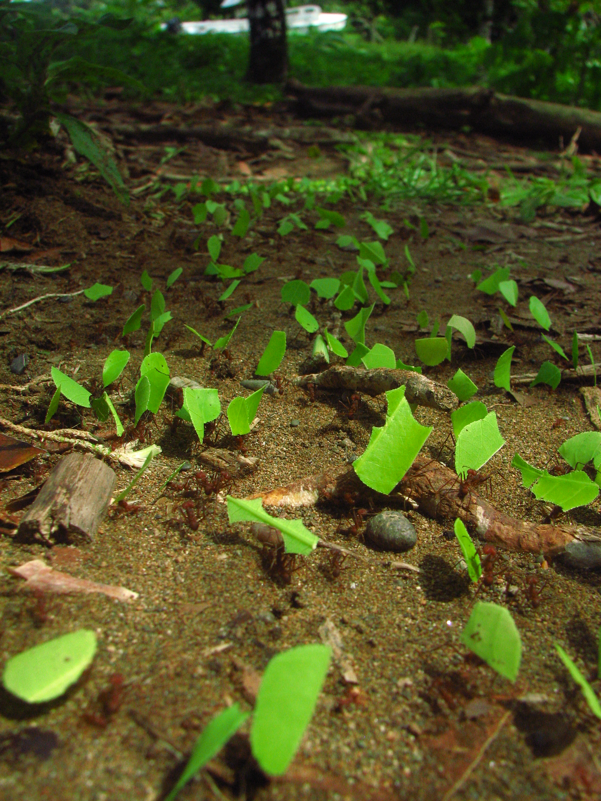

Un conjunto de algoritmos inspirados en hormigas para resolver problemas computacionalmente caros.
¿Qué problema pueden resolver las hormigas?
Las hormigas son eficientes encontrando fuentes de comida. Su gracia es que no necesitan conocer el
mapa de su territorio para eventualmente encontrar rutas eficientes.

¿Cómo lo logran?
Esencialmente, cada hormiga, mientras camina, deja un ratro de feromonas.